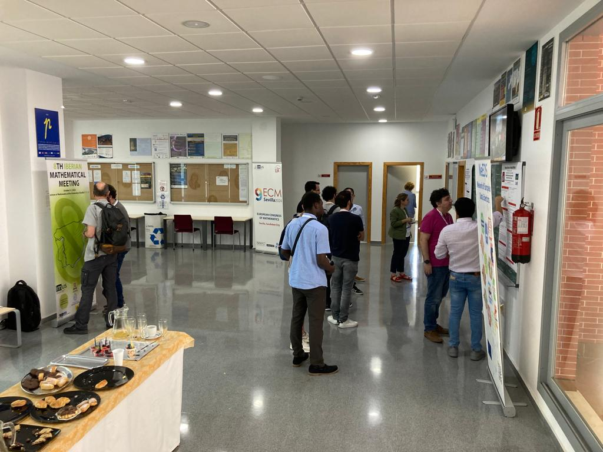
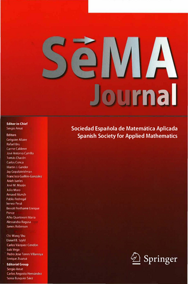

| Boletín electrónico de la SEMA – Número 33, diciembre 2023 | |
| ISSN 2659-4129 | |
| © | Sociedad Española de Matemática Aplicada – SEMA |
| © | De los autores |
| |
|
| https://www.sema.org.es/ |
Diseño de la portada: FOG.
Ilustración de la portada: Evolución del crecimiento de un tumor (fondo azul) y de nutrientes (fondo rojo) bajo distintas elecciones de las funciones de movilidad y proliferación. El tumor inicial de forma circular crece al consumir nutrientes sintiendo la atracción de las zonas ricas en nutrientes que se encuentran cercanas a él. Simulaciones numéricas publicadas en Daniel Acosta-Soba, Francisco Guillén-González, and J. Rafael Rodríguez-Galván, A structure-preserving upwind DG scheme for a degenerate phase-field tumor model. Computers & Mathematics with Applications 152 (2023) 317-333, https://doi.org/10.1016/j.camwa.2023.10.028. Cortesía de los autores.
Editorial Palabras del presidente
Estimados socios, nos es grato compartir los contenidos de este nuevo número del Boletín electrónico de la SEMA. Anunciamos muy buenas noticias, como la concesión de los Premios Nacionales de Investigación a nuestros socios Diego Córdoba Gazolaz y Xavier Ros Otón, el premio Steel 2024 de la AMS al profesor Haïm Brezis, y la celebración del solemne acto de entrega de la Medalla Echegaray 2022 al profesor José Antonio Carrillo de la Plata, también socio de nuestra Sociedad.
Incluimos una breve presentación de dos nuevas vocales en el consejo ejecutivo de la SEMA, las profesoras Virginia Selgas Buznego, de la Universidad de Oviedo, y María González Taboada, de la Universidade da Coruña.
Por otro lado, hemos añadido diversas reseñas de los diferentes eventos científicos que han tenido lugar durante los últimos meses, y que han sido patrocinados por la SEMA.
La sección de anuncios comienza con la comunicación de la convocatoria del XXVII Premio SEMA «Antonio Valle» al Joven Investigador (2024). La profesora María Eugenia Pérez-Martínez, de la Universidad de Cantabria, nos ha enviado una completa e interesante reseña sobre el libro Dialectique dans les sciences et systèmes dynamiques. Le Temps des Cerises, firmado por los profesores Évariste Sánchez-Palencia y Jean-Pierre Françoise, recientemente publicado en 2023.
Asimismo, se anuncian diversos eventos científicos. En particular, el XXVIII CEDYA/XVIII CMA, del 24 al 28 de junio de 2024 que se celebrará en Bilbao y está organizado por la Universidad del País Vasco UPV/EHU en colaboración con el Instituto BCAM.
Como es habitual, se presentan también los contenidos de los últimos números de SEMA Journal en los que cada artículo está convenientemente vinculado con su página web para un acceso rápido y cómodo.
Aprovechamos estas líneas para desearos unas felices fiestas y un mejor año venidero.
Saludos cordiales,
Francisco Ortegón Gallego
José Rafael Rodríguez Galván
Puerto Real (Cádiz), 9 de diciembre de 2023
Estimados colegas:
Aprovecho nuestro último boletín del año 2023 para hacer un pequeño balance de las actividades realizadas durante este ejercicio.
Como es habitual en cada año, hemos gestionado la convocatoria del premio SEMA «Antonio Valle» al joven investigador y al mejor artículo de SEMA Journal, así como el proceso de selección de la tesis que nos representa en los ECCOMAS Ph.D. thesis awards. El pasado mes de julio celebramos la XX Escuela Jacques-Louis Lions Hispano Francesa sobre Simulación Numérica en Física e Ingeniería en las instalaciones del Campus Norte de la Universitat Politècnica de Catalunya en Barcelona. Quiero expresar mi más sincero agradecimiento a los colegas Pedro Díez y Matteo Giacomini por todo el buen trabajo realizado que ha hecho posible que la pasada XX EHF haya sido todo un éxito. También hemos trabajado junto con la RSME y la SEIO en la elaboración de un documento que se ha enviado a la ANECA con propuestas al borrador de criterios de evaluación de la próxima convocatoria 2023 de los sexenios de investigación, esperando que sean tenidas en cuenta. En este último año también hemos patrocinado numerosas actividades de divulgación e investigación, algo de lo que nos sentimos especialmente satisfechos.
Este año que pronto cerramos ha traído buenas noticias para la nuestra comunidad: Diego Córdoba Gazolaz recibió el Premio Nacional de Investigación «Julio Rey Pastor» 2023, en el área de matemáticas y tecnologías de la información; Xavier Ros Otón fue galardonado con el Premio Nacional de Investigación para Jóvenes «María Andresa Casamayor», también en el área de Matemáticas y Tecnologías de la Información y las Comunicaciones; José Antonio Carrillo recogió la Medalla Echegaray 2022 en un acto organizado el pasado octubre en la RAC. Además José Carrillo fue conferenciante invitado en el pasado ICIAM 2023 que se celebró en Tokio (Japón); Francisco José Marcellán Español y Luis Vega recibieron las Medallas de la RSME 2023. Mi más sincera enhorabuena a todos ellos.
Quiero agradecer como presidente y socio de la SEMA el trabajo y dedicación de nuestra anterior vicepresidenta, María Ángeles Rodríguez Bellido de la Universidad de Sevilla, que primero como miembro del comité ejecutivo de la SEMA y después como vicepresidenta, ha estado trabajando estos últimos seis años por mejorar nuestra Sociedad y nos ha representado en diferentes foros internacionales. María Ángeles es una persona comprometida con la SEMA y ha sido una pieza fundamental en la toma de decisiones en los últimos años. También quiero agradecer a Mariano Mateos Alberdi de la Universidad de Oviedo su trabajo dentro del comité ejecutivo de la SEMA. Mariano tiene una memoria prodigiosa y es un trabajador inagotable, además de miembro del comité ejecutivo, también ha participado activamente en el comité de divulgación y ha sido una persona muy comprometida con todas las actividades organizadas por la SEMA en los últimos años y, en particular, con la organización del XXVI CEDYA - XVI CMA en Gijón, que a pesar de todas las dificultades relacionadas con la covid19, fue todo un éxito organizativo y de participación. También quiero agradecer el trabajo y dedicación de Esther Barrabés Vera de la Escola Politècnica Superior de Girona como miembro del comité ejecutivo de la SEMA, en particular en sus aportaciones en temas relacionados con la transferencia y las aplicaciones de la matemática y el papel de la mujer en las matemáticas. Por último, dar la bienvenida a María González Taboada de la Universidad de A Coruña, Cristian Morales Rodrigo de la Universidad de Sevilla y Virginia Selgas Buznego de la Universidad de Oviedo como nuevos consejeros de la SEMA y felicitar a Teo Roldan Marrodán por su renovación.
Durante este ejercicio tenemos nuevos retos, como la organización de XXVIII Congreso de ecuaciones Diferenciales y Aplicaciones / XVIII Congreso de Matemática Aplicada (CEDYA/CMA) que se celebrará entre los días 24 y 28 de junio en la Universidad del Pais Vasco en Bilbao y del que tenéis un primer anuncio en este boletín. Además el próximo mes de julio se celebra en Sevilla el noveno Congreso Europeo de Matemáticas (9ECM). Desde aquí os animo a participar en ambos eventos.
Como sabéis seguimos trabajando en nuestra web, en la parte relacionada con la difusión de actividades, eventos, ofertas de empleo, o la oferta de un espacio que ayude a la organización de eventos como nuestros congresos CEDYA/CMA o las EHF. También seguimos trabajando por mejorar el posicionamiento de SEMA Journal. Os animo a que enviéis trabajos a nuestra revista.
Por último, os recuerdo que la SEMA quiere servir de altavoz para todos los eventos relevantes relacionados con la Matemática Aplicada e Industrial que se organicen en España. Desde aquí os animo a que nos trasmitáis toda la información que estiméis oportuna para difundirla entre nuestros socios. Es nuestra intención destinar una parte de nuestro presupuesto al mecenazgo de estos eventos, en la medida de nuestras posibilidades económicas.
Os deseo un feliz y próspero año 2024.
Un cordial saludo.
| Manuel Jesús Castro Díaz |
| Presidente de la SEMA |
| Málaga, 3 de diciembre de 2023 |
Juan Luis Vázquez Suárez
Académico numerario de la
Real Academia de Ciencias Exactas, Físicas y Naturales
La Medalla Echegaray es el galardón científico más alto concedido por la Real Academia de Ciencias Exactas, Físicas y Naturales de España (RAC). Fue instituido a instancias de D. Santiago Ramón y Cajal en 1905, tras la concesión del Premio Nobel a D. José Echegaray. Desde la corporación, se reconoce con la medalla una eminente trayectoria investigadora o una contribución científica de especial relevancia.
La medalla correspondiente al año 2022 fue concedida en sesión plenaria de la RAC el día 21 de diciembre de 2022 a nuestro compañero José Antonio Carrillo de la Plata, doctor por la Universidad de Granada y hoy día Full Professor de la Universidad de Oxford. La RAC otorga este reconocimiento cada dos años y es el galardón científico más antiguo reconocido en España.

José Antonio Carrillo de la Plata había sido nombrado previamente Académico Extranjero de la RAC. Es doctor por la Universidad de Granada en 1996 y desarrolla su carrera en el campo de las ecuaciones diferenciales de la física, en particular en las ecuaciones de difusión no lineal, las ecuaciones cinéticas y el cálculo de variaciones. Destaca su notable dominio de técnicas novedosas y delicadas del análisis, motivadas en la física y las probabilidades. Desde 2004, ha sido sucesivamente profesor ICREA en Barcelona y desde 2012 fue profesor del Imperial College de Londres hasta 2020. En los últimos años, sus contribuciones han sido fundamentales en ámbitos como la biología matemática, en sus vertientes teórica y computacional. Estos trabajos y su creciente renombre internacional, así como el extenso magisterio doctoral, le han promovido a la cátedra del Mathematical Institute de la Universidad de Oxford en Reino Unido, en 2020.
La Solemne Sesión de Entrega de la Medalla Echegaray 2022, celebrada el 27 de septiembre de 2023, fue grabada y puede visualizarse en el siguiente enlace https://www.youtube.com/watch?v=DmIaGhfmgas. La laudatio del profesor Carrillo de la Plata fue realizado por el profesor Juan Luis Vázquez y puede leerse en el siguiente enlace (pulse aquí). El discurso del profesor Carrillo puede leerse en este otro enlace (pulse aquí)
En la propuesta de concesión, se destaca la calidad de la obra científica del profesor Carrillo en matemática pura que abarca desde las Ecuaciones en Derivadas Parciales y campos afines hasta diversas ramas de la ciencia aplicada. Sus investigaciones le han llevado a la obtención de diversos premios de relieve. La concesión de esta medalla responde a que José Antonio Carrillo es ya una referencia mundial en sus campos de estudio, con gran presencia en eventos o congresos, como la International Conference for Industrial and Applied Mathematics (ICIAM) 2023, celebrada a nivel mundial, y en instituciones europeas (European Mathemathics Society, European Academy of Sciences, Section Mathematics). Muy recientemente, J. A. Carrillo ha sido artífice para establecer núcleos de actividad matemática en España como el centro asociado BIRS - IMAG de la Universidad de Granada que acaba de entrar en funcionamiento en mayo pasado con una serie de conferencias internacionales del máximo nivel.
La RAC espera que, animado por este reconocimiento, el profesor Carrillo extienda su magisterio a las nuevas generaciones para conducir la investigación futura por la difícil combinación de la alta exigencia intelectual de la matemática pura con su aplicación a los retos de la ciencia, la tecnología y más en general la sociedad del siglo XXI, esfuerzo de compenetración que tantos éxitos está cosechando gracias a las mentes más brillantes de nuestra profesión. Tal esfuerzo debería revertir en el progreso de la ciencia y en la resolución racional de problemas cruciales de la sociedad, en consonancia con las ideas progresistas expuestas hace más de un siglo por D. Santiago Ramón y Cajal y D. José Echegaray.
| Juan Luis Vázquez, |
| Académico numerario de la RAC |
| Madrid, 2 diciembre 2023 |
El pasado 22 de septiembre se fallaron los Premios Nacionales de Investigación, dotados con 30.000 euros para cada modalidad y que distinguen a aquellas personas investigadoras de España que destacan por su trayectoria y relevancia internacional en sus respectivas áreas de investigación. También reconocen el mérito de jóvenes —con edad máxima de 40 años— que hayan alcanzado logros relevantes en las primeras etapas de sus carreras.
En el área de Matemáticas y Tecnologías de la Información y las Comunicaciones, el Premio Nacional de Investigación Julio Rey Pastor se ha concedido a nuestro colega, y socio de la SEMA, Diego Córdoba Gazolaz por la originalidad y el impacto de sus investigaciones y métodos introducidos en el área de las ecuaciones de la mecánica de fluidos, así como su extraordinaria labor formativa.
El Premio Nacional de Investigación para Jóvenes María Andresa Casamayor, en el área de Matemáticas y Tecnologías de la Información y las Comunicaciones, se ha concedido a Xavier Ros Otón por el desarrollo de técnicas nuevas y fundamentales en el área de las ecuaciones en derivadas parciales, entre las que destacan su estudio de los problemas de frontera libre que modelan la transición entre distintos estados de la materia.
Nuestra enhorabuena a Diego y Xavier por este merecido reconocimiento.

Jesús Ildefonso Díaz Díaz
Universidad Complutense de Madrid
_

Ayer se hizo pública la asignación del Steele Prize for Lifetime Achievement de 2024, de la American Mathematical Society (AMS), dotado con 10.000 dólares a Haïm Brezis (1944-) por sus destacadas y fundamentales contribuciones en varios campos del análisis funcional no lineal y las ecuaciones en derivadas parciales, y por su notable influencia en las matemáticas, en particular a través de su excepcional formación de estudiantes de doctorado.
En la lista de sus 58 alumnos de doctorado que se puede encontrar en https://www.mathgenealogy.org/id.php?id=39923&fChrono=1, aparece en séptimo lugar J. I. Díaz (tesis en 1976) y más adelante aparecen también otros españoles: J. Hernández (1977), J. L. Vázquez (1979), M. A. Herrero (1979), J. Carrillo Menéndez (1981) y M. Escobedo (1988). Además, Brezis mantuvo un estrecho contacto con otros especialistas españoles como G. Díaz, F. Bernis, S. J. Álvarez, X. Cabré y D. Gómez-Castro, entre otros muchos.
La lista de méritos y distinciones de Haïm Brezis es muy extensa como para ser reproducida aquí. Señalemos tan solo que fue elegido Académico Extranjero de la Real Academia de Ciencias de España en el 2002: el mismo año que fue nombrado Doctor Honoris Causa por la UAM.
Uno de sus libros (Análisis Funcional Aplicado: teoría y aplicaciones, Alianza Universidad, Madrid, 1983) ha sido libro de texto en numerosas universidades españolas, e hispano-americanas, por muchos años y ha tenido una gran influencia en muchas generaciones de matemáticos de todo el mundo.
El Steele Prize for Lifetime Achievement, de la AMS, fue instaurado en 1993 y en años anteriores ha sido otorgado a muchos de los mejores matemáticos de universidades norteamericanas (desde su jubilación en la Université de Paris VI, a la actualidad, H. Brezis es profesor de la Rutgers University: de hecho, fue vicepresidente de la American Mathematical Society). Por citar tan solo dos de esos galardonados mencionaremos los Premios Abel L. Caffarelli (2009) y L. Nirenberg (1994).

Su estrecha relación con España se tradujo en repetidas actuaciones de enorme valor en la vida de la matemática española, como fue su repetida participación como autor (y miembro del Comité Editorial) de la revista RACSAM, desde su fundación en 2001, la firma del acuerdo entre la Real Academia de Ciencias de España y la Académie des Sciences de Francia el 12 de junio de 2001 (el primer acuerdo bilateral en la historia de ambas academias) y la organización (junto a J. I. Díaz) del Congreso Franco-Español sobre Matemáticas y Medio Ambiente, en Paris, los días 23 y 24 de mayo de 2001 (cuyas actas fueron publicadas íntegramente en RACSAM volumen 96, número 3 de 2002).
Dentro la última Asamblea General Ordinaria de la SEMA, celebrada el pasado 4 de julio en Barcelona, tuvieron lugar las elecciones a miembros del consejo ejecutivo de la SEMA. Como resultado, las profesoras Virginia Selgas Buznego, de la Universidad de Oviedo, y María González Taboada, de la Universidades da Coruña, han sido elegidas como nuevas miembros del consejo ejecutivo.
Virginia Selgas Buznego se doctoró en la Universidad de Oviedo bajo la dirección del profesor Salim Meddahi con un estudio numérico de las ecuaciones de Maxwell cuasiestáticas. Ha trabajado como profesora en las Universidades de A Coruña y de Oviedo, y actualmente es TU en esta última.
Sus primeras actividades de investigación se centraron en el análisis de combinaciones de elementos finitos y elementos de contorno para problemas de dispersión acústica y para problemas de electromagnetismo. Posteriormente, su investigación se ha redirigido principalmente al estudio de métodos cualitativos para problemas inversos de dispersión acústica y electromagnética, centrándose especialmente en el estudio del método LSM. No obstante, ha continuado estudiando métodos numéricos para problemas directos de dispersión, en particular con elementos finitos DG tipo Trefftz o con elementos de contorno tipo CQ-BEM; también ha abordado otros temas, entre los que destacan el análisis de problemas de difusión cruzada en dinámica de poblaciones.
Se pueden encontrar más detalles de su actividad docente e investigadora en https://virginiaselgas.com.
María González Taboada es licenciada y doctora en Matemáticas por la Universidad de Oviedo, con Premio Extraordinario de Licenciatura y de Doctorado. Al finalizar su tesis doctoral, se incorporó a la Universidad de Castilla-La Mancha para trabajar en un proyecto del V Programa Marco UE liderado por el Profesor Antonio Conejo. Posteriormente, ganó una plaza como profesora asociada en el Departamento de Matemáticas de la Universidade da Coruña, donde es Profesora Titular de Universidad desde 2003. Su labor docente ha estado vinculada principalmente a la Facultad de Informática de la Universidade da Coruña, donde imparte actualmente docencia en los Grados en Ingeniería Informática, Inteligencia Artificial, y Ciencia e Ingeniería de Datos. Además, forma parte de la Comisión de Formación del Centro de Investigación en Tecnologías de la Información y las Comunicaciones (CITIC), y tiene reconocidos cuatro tramos docentes (quinquenios) y cuatro tramos de investigación (sexenios).
Su actividad investigadora se ha centrado en el análisis numérico de problemas modelados por ecuaciones en derivadas parciales. En particular, analizó el efecto de la integración numérica en los métodos simétricos de acoplamiento de elementos finitos y elementos de contorno. A raíz de una estancia posdoctoral en la Universidad de Concepción (Chile) con el Profesor Gabriel N. Gatica, comenzó a trabajar en el análisis numérico de métodos de elementos finitos mixtos en mecánica de fluidos y elasticidad, con especial énfasis en el análisis del error a posteriori. Actualmente, su línea de investigación es la simulación numérica de flujos en medios porosos y poroelásticos.
En 2008, recibió el Premio SEMA al Joven Investigador. Ha sido invitada en centros de prestigio internacional, como el Laboratorio Jacques-Louis Lions, de la Sorbonne-Université, y el Basque Center for Applied Mathematics (BCAM), y mantiene colaboraciones regulares con investigadores reconocidos internacionalmente. Ha impartido varias charlas plenarias y participado en minisimposios en congresos internacionales y nacionales. También ha participado en la organización de algunas actividades de carácter científico, y preside el Comité Organizador de la próxima BAIL Conference, que se celebrará en A Coruña del 10 al 14 de junio de 2024.
En https://sites.google.com/view/mariagonzaleztaboada/home se pueden encontrar más detalles de su actividad docente e investigadora.
Sevilla, Spain, June 12-16, 2023
https://departamento.us.es/edan/USSPDE23/
M.A. Rodríguez Bellido and D. A. de Souza
Dpto. Ecuaciones Diferenciales y Análisis Numérico, Universidad de Sevilla
Last June at the Institute of Mathematics of the University of Seville (IMUS) took place the Ulysseus Spring School in PDEs - USSPDE, a mathematical meeting, in the spirit of the Ulysseus consortium, aimed at bringing together researchers and students from some of the Ulysseus partner Universities. The main objective of the meeting was to share present recent research obtained by mathematicians from Ulysseus partner Universities, especially from the Université Côte d’Azur (Laboratoire Jean Alexandre Dieudonné- LJAD) and the Universidad of Sevilla (Departamento de Ecuaciones Diferenciales y Análisis Numérico - EDAN, Instituto de Matemáticas de la Universidad de Sevilla - IMUS), in a pleasant atmosphere that we hope will help to strengthen the ties of collaboration and cooperation of the Ulysseus community and its partners.
The USSPDE programme included:
three mini-courses
nine plenary lectures
roundtable about cooperation, opportunities and future collaborations
poster session for doctoral and master students
The Opening ceremony of the Ulysseus Spring School in PDEs has been attended and addressed by:
Julián Martínez, Vice-Chancellor for Research of the Universidad de Sevilla
Justo Puerto Albandoz, Head of the Instituto de Matemáticas de la Universidad de Sevilla
Antonio Suárez Fernández, Head of the Departamento de Ecuaciones Diferenciales y Análisis Numérico (US)
Yves D’Angelo, Head of the Laboratoire Jean Alexandre Dieudonné (UCA)
Enrique Fernández-Cara, Chairman of USSPDE’s organising committee
María Ángeles Rodríguez Bellido, Vice-President of the Sociedad Española de Matemática Aplicada - SeMA.
The USSPDE’s program included three three-hours mini-courses and nine one-hour plenary talks were held (main pictures can be seen in Figure 6 and 7):
Mini-course 1: Optimal design through the homogenization theory. Delivered by Profs. Faustino Maestre and Juan Casado Díaz (Universidad de Sevilla)
Mini-course 2: Introduction to nonlinear dispersive equations. Delivered by Simona Rota-Nodari (Université Côte d’Azur)
Mini-course 3: Mathematical modelling and numerical analysis in chemotaxis. Delivered by Profs. Francisco Guillén González and María Ángeles Rodríguez Bellido (Universidad de Sevilla)
Talk 1: DREAMS : an interdisciplinary project. Dynamics of Random ExpAnding MultiScale networks. Delivered by Prof. Yves D’Angelo (Université Côte d’Azur)
Talk 2: Fisher/KPP models with memory for fungal growth and their numerical simulation. Delivered by Prof. Laurent Monasse (Université Côte d’Azur)
Talk 3: Optimisation of Sturm-Liouville determinants. Delivered by Prof. Jean-Baptiste Caillau (Université Côte d’Azur)
Talk 4: Structural stability of infinite-dimensional dynamical systems. Some applications to real phenomena. Delivered by Prof. José Antonio Langa Rosado (Universidad de Sevilla)
Talk 5: Full discretization and regularization for the Calderón problem (Università di Genova). Delivered by Prof. Alessandro Felisi (University of Genova)
Talk 6: Nonlocal and Interface problems. Delivered by Prof. Cristian Morales Rodrigo (Universidad de Sevilla)
Talk 7: Fractional BV spaces for hyperbolic conservation laws. Delivered by Prof. Stéphane Junca (Université Côte d’Azur)
Talk 8: An overview on Reduced Order for Large Eddy Simulation turbulence models. Delivered by Prof. Enrique Delgado Ávila (Universidad de Sevilla)
Talk 9: On theoretical and numerical control and inverse problems. Delivered by Prof. Enrique Fernández Cara (Universidad de Sevilla)
|
(a)
Yves
D’Angelo |

(b)
Laurent
Monasse |
|
(c)
Jean-Baptiste
Caillau |
|
(d)
José
Antonio
Langa
Rosado |
|
(e)
Alessandro
Felisi |
|
(f)
Cristian
Morales
Rodrigo |
One important part were the roundtable on cooperation, opportunities and future collaborations.
The main aim of the roundtable was to present some possibilities of cooperation, opportunities and future collaborations between students/researchers of partner universities in the frame of European University Ulysseus. The members of the roundtable were Profs. Carmen Vargas Macías (Vice-Chancellor of Proyección Institucional e Internacionalización of Universidad de Sevilla), Justo Puerto Albandoz (Head of the Instituto de Matemáticas de la Universidad de Sevilla), Antonio Suarez Fernández (Head of the Departamento de Ecuaciones Diferenciales y Análisis Numérico, Universidad de Sevilla) and Yves D’Angelo (Head of Laboratoire Jean Alexandre Dieudonné, Université Côte d’Azur).
PhD researchers presented their current work in the Poster’s session (see Figure 9).

(a)
A.
Bandera |
|
(b)
Y.
Carranza |
|
(c)
J.
García-Fuentes |

(d)
M.
Miranda |
|
(e)
V.
Ramos |
|
(f)
R.
Carlos |
| 
(g)
Poster
Session |

The organizing committee of USSPDE was formed by Yves D’Angelo (UCA - France), Anna Doubova (US - Spain), Enrique Fernández-Cara (US - Spain), Manuel González-Burgos (US - Spain), Iván Moyano (UCA - France), María Ángeles Rodríguez-Bellido (US - Spain) and Diego Araujo de Souza (US - Spain).
The scientific committee of USSPDE was formed by Enrique D. Fernández Nieto (US - Spain), Blanca Climent Ezquerra (US - Spain), Thierry Goudon (UCA - France) and Roland Masson (UCA - France).
On behalf of the committee, we would like to thank the Instituto de Matemáticas de la Universidad de Sevilla, Dpto. Ecuaciones Diferenciales y Análisis Numérico and Vicerrectorado de Proyección Institucional e Internacionalización de la Universidad de Sevilla, Sociedad Española de Matemática Aplicada, Laboratoire Jean Alexandre Dieudonné and Ulysseus team of Université Côte D’Azur for their generosity and support in making this event possible.
El pasado 27 de septiembre tuvo lugar la Jornada de Sociedades COSCE 2023 con el lema Humanos y Máquinas. Oportunidades y retos para la ciencia española, en colaboración con FACME.
La Jornada de Sociedades COSCE 2023, organizada en colaboración con FACME, contó con la presencia de Mateo Valero, director del Centro Nacional de supercomputación.
Pep Munuera, Juanjo Doblado, María José Aranzana y Julio Gonzalo ahondaron en diversos aspectos y aplicaciones de la Inteligencia Artificial.
Raúl Jiménez habló de la cosmología sin modelos, una revolución inminente para descifrar los secretos del universo. África González Fernández habló de la nanoinmunoterapia, tratamientos con nanopartículas que podrían ser, entre otras cosas, el modo más eficaz de tratar el cáncer. Por último, Mara Diersen disertó sobre inteligencia organoide, la propuesta de crear máquinas que utilicen como impulso tejidos cerebrales.
La jornada se clausuró con una mesa redonda y que tuvo como título: La ética y la inteligencia artificial: dos retos transversales para la investigación actual. La mesa estuvo moderada por Lluis Montoliú, premio COSCE a la Difusión de la Ciencia 2022, y contó con la participación de Txetu Ausín, Carme Torras, Julián Isla y Javier García.
Se puede consultar toda la información sobre la jornada pulsando en el siguiente enlace.
Recientemente se ha producido la renovación parcial del panel del área de Matemáticas (MTM) de la AEI. El 1 de octubre ha sido nombrado Eduardo Liz Marzán nuevo presidente del panel. Su puesto como gestor de matemática aplicada pasa a ocuparlo Manuel Jesús Castro Díaz, catedrático de matemática aplicada en la Universidad de Málaga, quien ha sido nombrado con efectos de 1 de noviembre y del que incluimos una breve reseña bibliográfica:
Manuel Jesús Castro Díaz es Catedrático de matemática aplicada en la Universidad de Málaga y actual presidente de la Sociedad Española de Matemática Aplicada (SEMA). Su investigación se centra en el análisis numérico de las ecuaciones en derivadas parciales, con especial énfasis en el estudio de las leyes de conservación con términos fuentes y productos no conservativos y sus aplicaciones en el modelado y simulación de fluidos geofísicos, así como en su implementación eficiente utilizando técnicas de HPC. Ha sido IP de varios proyectos del Plan Nacional e investigador de la red ETC-IN Modelado y Computación de Choques e Interfaces financiada por la Unión Europea. También ha participado como investigador en varios proyectos internacionales financiados por el programa Horizonte 2020 de la UE e IP en varios contratos de transferencia con organismos internacionales como la NOAA (EEUU) o INGV (Italia) relacionados con el modelado y simulación de tsunamis. Ha codirigido doce tesis doctorales y es autor de más de cien artículos en revistas de referencia en las áreas de matemática aplicada y geofísica. Ha recibido el premio J. L. Lions al joven investigador 2008 concedido por ECCOMAS y su grupo de investigación fue premiado en 2018 con el premio Nvidia Global Impact Award 2018, por sus contribuciones en el modelado y simulación de tsunamis. Tuvo el honor de ser conferenciante invitado del ICM 2018 en las secciones Numerical Analysis and Scientific Computing, Mathematics in Science and Technology y Numerical Analysis and Scientific Computing y ha sido conferenciante plenario en congresos internacionales de referencia en su área de trabajo.
De esta forma, el panel actual consta de 8 personas:
Presidente:
Eduardo Liz Marzán (Universidade de Vigo).
Coordinador:
Víctor Manuel Pérez García (Universidad de Castilla-La Mancha).
Gestor de matemática aplicada:
Manuel Jesús Castro Díaz (Universidad de Málaga),
Gestora de álgebra y teoría de números:
Elisenda Feliu Trijueque (University of Copenhagen).
Gestores de estadística e investigación operativa:
Rosa Elvira Lillo Rodríguez (Universidad Carlos III de Madrid) e Ignacio García Jurado (Universidade de A Coruña).
Gestora de geometría y topología:
Eva Miranda Galcerán (Universitat Politècnica de Catalunya).
Gestor de análisis matemático:
Javier Parcet Hernández (ICMAT – CSIC).
El pasado 26 de junio arrancó «El Aula de las matemáticas y la ciencia de Bueño», un innovador proyecto cultural promovido conjuntamente por el Ayuntamiento de Ribera de Arriba y la Universidad Autónoma de Madrid (UAM), y cuyo director es nuestro colega y expresidente de la SEMA Juan Luis Vázquez, profesor emérito de la UAM y académico numerario de la Real Academia de Ciencias.
Este proyecto nace con el deseo de contribuir a extender la cultura científica en la región de Asturias, en particular en lo que se refiere a las matemáticas. La ausencia de una razonable cultura general matemática y científica entre el amplio público es una triste realidad y el Aula pretende paliar en lo posible este déficit. Uno de los objetivos del Aula es el acercar el conocimiento de las múltiples facetas de las matemáticas a un público diverso con interés por la cultura y la modernidad, y con ello contribuir a la extensión de la cultura matemática, vista en el contexto más amplio de la cultura científica y tecnológica.
Además del acto de inauguración, el Aula ya tuvo una primera jornada de conferencias el pasado 25 de septiembre, impartidas por el profesor Salvador Ordóñez, ex Rector de la Universidad de Alicante y de la Universidad Internacional Menéndez Pelayo y la profesora Consuelo Martínez, matemática por la Univ. de Zaragoza, catedrática de álgebra en la Universidad de Oviedo y Académica correspondiente de la Real Academia de Ciencias de España.
La segunda sesión del Ciclo de Conferencias Otoño-Invierno tuvo lugar el 6 de noviembre en la Casa de las Artes y las Ciencias de Bueño y contará con la presencia del profesor Francisco Marcellán, profesor emérito de la Universidad Carlos III de Madrid, que ha sido presidente de la RSME, Real Sociedad Matemática Española y el profesor Manuel Jesús Castro Díaz, catedrático de la Universidad de Málaga y actualmente presidente de la SEMA, Sociedad Española de Matemática Aplicada.
Se puede consultar más información sobre el Aula de las matemáticas y la Ciencia de Bueño en el siguiente enlace
El pasado 15 de noviembre se ha celebrado la ceremonia de entrega de premios del VI Concurso de Modelización Matemática del IMI (CMM-IMI 2023). Este acto tuvo lugar en el Salón de Actos de la Facultad de Ciencias Matemáticas de la Universidad Complutense de Madrid (UCM).
Se trata de un concurso en el que han participado estudiantes de grado de 26 universidades de Argentina, Brasil, Chile, España y México.
El acto ha contado con la participación de varias autoridades académicas, a saber, Jorge Jesús Gómez Sanz, vicerrector de Tecnología y Sostenibilidad de la UCM; Rosa María de la Fuente Fernández, vicerrectora de Estudiantes de la UCM; Rosario Cristóbal, vicerrectora de Relaciones Internacionales de la UCM; Antonio Bru Espino, decano de la Facultad de CC. Matemáticas de la UCM; Manuel J. Castro Díaz (Universidad de Málaga), presidente de la SEMA; ángel Manuel Ramos del Olmo, director del Instituto de Matemática Interdisciplinar. El acto también contó con la participación de Fernando Blasco Contreras, matemago de la UPM, que hizo de maestro de ceremonias, conduciendo el evento y sorprendiendo a todos con sus trucos de magia, José Manuel González Vida (Universidad de Málaga), que presentó el problema que han tenido que abordar los equipos concursantes, Carlos Calvo Tapia (matemático de la UCM y pianista), y, por supuesto, los miembros de los grupos finalistas, que pertenecen a las siguientes universidades: Universidad Autónoma de Madrid, Universidad Complutense de Madrid, Universidad Carlos III de Madrid y Universidad de Oviedo

Durante los días 3 al 7 de julio de 2023 tuvo lugar al XX Escuela Jacques-Louis Lions Hispano-Francesa sobre simulación Numérica en Física e Ingeniería en las instalaciones del Campus Norte de la Universitat Politècnica de Catalunya en Barcelona.
Muchos problemas de física e ingeniería se caracterizan por fenómenos que involucran diferentes escalas, tanto espaciales como temporales. La descripción precisa y la simulación fiable de tales fenómenos implican grandes desafíos desde el punto de vista tanto de la modelización matemática como de la simulación numérica. La XX edición de la Escuela estuvo dedicada a dichos desafíos y tuvo como lema Mathematical and computational modelling across the scales. El enfoque temático fue amplio e incluyó contribuciones sobre modelado y métodos numéricos, para problemas directos e inversos, con aplicaciones que abarcan desde la propagación de ondas hasta materiales compuestos y fluidos complejos, desde la mecánica cuántica hasta simulaciones en biomatemática. La Escuela tuvo lugar en el Laboratori de Càlcul Numèric (LaCàN) de la Universitat Politècnica de Catalunya y el Centro Internacional de Métodos Numéricos en Ingeniería (CIMNE), bajo los auspicios de la Sociedad Española de Matemática Aplicada (SEMA) y la Société de Mathématiques Appliquées et Industrielles (SMAI).
La escuela contó con numerosos estudiantes de doctorado y becarios posdoctorales en matemáticas aplicadas e ingeniería computacional y también contó con un buen número de investigadores séniors interesados en este campo. Como en las anteriores ocasiones, el objetivo fundamental de las EHF es fortalecer la relación existente entre las comunidades de matemática aplicada española y francesa, así como abrir la participación a investigadores de otras disciplinas y países con el fin de fomentar el debate multidisciplinar y la difusión cruzada de ideas.
El comité organizador local de la XX EHF estuvo formado por los profesores:
Pedro Díez, Universitat Politècnica de Catalunya. CIMNE (España).
Matteo Giacomini, Universitat Politècnica de Catalunya. CIMNE (España).
Matteo Giacomini, (España). Universitat Politècnica de Catalunya, CIMNE.
Frédéric Lagoutière, (Francia). Université Claude Bernard Lyon 1.
Gladys Narbona-Reina, (España). Universidad de Sevilla.
Stéphanie Salmon, (Francia). Université de Reims..


La XX EHF contó con cuatro cursos, tres conferencias plenarias y una sesión de pósteres dirigida a que los jóvenes investigadores participantes pudieran difundir sus trabajos. Como viene siendo habitual en las últimas EHF, se premió al póster más original tanto por su temática, como por las técnicas empleadas en el planteamiento del problema de modelización matemática y su resolución. En esta edición el póster elegido fue el elaborado por Dña. Laura Rinaldi de la Università Degli Studi di Padova de Padua, Italia, con el título Bread leavening and baking: a modelling challenge.
Como hemos dicho, la pasada edición contó con cuatro cursos impartidos por los profesores:
Hélène Barucq, Inria (Francia), que impartió el curso Advanced Numerical Methods for Probing Complex Objects.
Jean-Bernard Bru, Ikerbasque, UPV/EHU, BCAM (España), que impartió el curso C∗-Algebras and Mathematical Foundations of Quantum Statistical Mechanics.
Ana Carpio, Universidad Complutense de Madrid (España), que impartió el curso Uncertainty Quantification in Scientific Computing.
Aline Lefebvre-Lepot, CNRS, École Polytechnique (Francia) que impartió el curso From granular media to suspensions: taking contacts and close interactions into account.
Además de los cursos, también se impartieron tres conferencias plenarias a cargo de los profesores:
Ludovic Chamoin, ENS Paris-Saclay, Institut Universitaire de France (Francia), que impartió la conferencia titulada Data assimilation and integration into simulation models.
Laetitia Giraldi, Inria (Francia) que impartió la conferencia titulada Micro-swimmer’s Control: From a Computational Framework to the Optimization Process.
Estefanía Peña, Universidad de Zaragoza (España), que impartió la conferencia titulada Mathematical and numerical modelling of the mechanobiology of the atheroma plaque.
El material de los cursos (presentaciones y códigos) pueden descargarse de la página del programa de la XX EHF.
El acto de apertura de la XX EHF fue presidido por Prof. Dra. Esther Real, directora de la Escuela de Ingeniería Civil de la Universitat Politècnica de Catalunya, Prof. Dr. Pedro Díez, director científico del CIMNE y presidente del comité organizador local y el Prof. Dr. Manuel J. Castro Díaz, presidente de la SEMA.
Además de los cursos, conferencias plenarias y la sesión de pósteres, durante la XX EHF, se entregaron el premio SEMA «Antonio Valle» al joven investigador y el premio SEMA al mejor artículo del SEMA Jr. El Dr. Xavier Fernández-Real Girona, galardonado con el premio SEMA «Antonio Valle» al joven investigador impartió una charla titulada The fractional obstacle problem donde destacó algunas de sus contribuciones más relevantes y el Prof. Dr. Carlos Castro, galardonado con el premio SEMA al mejor artículo, impartió la charla titulada Load matrix recovery from scattering data in linear elasticity donde describía las bases del trabajo premiado así como algunos resultados recientes.
Además del programa científico, el programa de XX EHF se completó con un cóctel de bienvenida en la sede de la escuela y una cena de gala que tuvo lugar el 6 de julio en el restaurante Abrassame situado en las arenas en Barcelona donde pasamos una agradable velada con vistas al parque de Montjuïc.

Como en ediciones anteriores, las actas de la escuela se publicarán en un volumen especial de la serie SEMA/SIMAI de Springer-Verlag.

Con motivo del 70 cumpleaños de J. M. Sanz-Serna, los días 12 y 13 de junio de 2023 tuvo lugar en la Facultad de Ciencias de la Universidad de Valladolid un encuentro científico, como reconocimiento a su labor investigadora y a la huella que ésta ha dejado en el Departamento de Matemática Aplicada de dicha universidad. El principal objetivo de dicho encuentro era reunir en torno al homenajeado a un buen grupo de investigadores especializados en Análisis Numérico, que comparten el haber colaborado estrechamente con él en algún momento de su trayectoria científica, aunque estén dispersos por buena parte de la geografía española (Bilbao, Castellón, Madrid, San Sebastián, Sevilla, Valencia y, cómo no, Valladolid), y también en Coimbra, Edimburgo o Pekín. El encuentro permitió poner en común los resultados de investigación más recientes obtenidos por los distintos conferenciantes y propiciar que se puedan abrir nuevas vías de colaboración entre ellos.
El comité organizador del workshop estaba compuesto por I. Alonso, L. M. Abia, M. P. Calvo, B. Cano, A. Durán, J. de Frutos, V. Gatón, C. González y A. M. Portillo.
En el evento participaron los siguientes conferenciantes:
Alfonso Álamo,
Adérito Araújo (Universidade de Coimbra),
Sergio Blanes (Universidad Politécnica de Valencia),
M. P. Calvo (Universidad de Valladolid),
Begoña Cano (Universidad de Valladolid),
Cédric M. Campos (Universidad Rey Juan Carlos),
Fernando Casas (Universidad Jaume I),
Ángel Durán (Universidad de Valladolid),
Javier de Frutos (Universidad de Valladolid),
Bosco García-Archilla (Universidad de Sevilla),
Lorenzo Nagar (Basque Center for Applied Mathematics),
Ander Murua (Universidad del País Vasco UPV/EHU),
Ana M. Portillo (Universidad de Valladolid),
Luke Shaw (Universidad Jaume I),
Fernando Vadillo (Universidad del País Vasco UPV/EHU),
Beibei Zhu (University of Science and Technology Beijing),
Konstantinos Zygalakis (University of Edinburgh).
En http://jmss70.uva.es/speakers/ puedes encontrar información sobre el título de las ponencias y de un breve resumen de las mismas. El programa del evento puede consultarse en http://jmss70.uva.es/program/.

La relevancia en estos días de los fenómenos relacionados con la propagación de fluidos, bien desde un punto de vista experimental (mejor precisión en las observaciones) bien de análisis de riesgos (prevención de daños como consecuencia de fenómenos extremos) depende de una mejor comprensión de su dinámica, a través de su modelización matemática. En este sentido, el análisis y la aproximación numérica de ecuaciones en derivadas parciales son herramientas fundamentales. En torno a ellos tuvo lugar un encuentro científico los días 26 y 27 de junio de 2023 en la Facultad de Ciencias de la Universidad de Valladolid. Su principal objetivo fue reflejar la diversidad existente en la materia con la presentación de los más recientes resultados en la formulación, análisis teórico y tratamiento numérico de este tipo de problemas, por parte de investigadores nacionales e internacionales de reconocido prestigio y diferentes especialidades.
El comité organizador de estas jornadas estaba compuesto por
Ángel Castro (ICMAT),
Ángel Durán Martín (UVA),
Rafael Granero Belinchón (UC).
En el evento participaron los siguientes investigadores:
Sílvia Barbeiro (Universidade de Coimbra).
Miguel D. Bustamante (University College Dublin).
Ángel Castro (ICMAT).
Diego Córdoba (ICMAT).
Jezabel Curbelo (UPC).
Esteban Ferrer (UPM).
Rafael Granero-Belinchón (UC).
David Lannes (Université de Bordeaux).
Renato Lucà (BCAM).
María Medina de la Torre (UAM).
Tomás Morales (UMA).
Gulcin M. Muslu (Istanbul Technical University).
Jean-Claude Saut (Université Paris-Sud 11).
Leetha Saridaki (University of Athens).
Adélia Sequeira (IST Lisboa).
En http://mpf.uva.es/participants/ puedes encontrar información sobre el título de las ponencias y de un breve resumen de las mismas. El programa del evento puede consultarse en http://mpf.uva.es/program/
Teo Roldán Marrodán
Universidad Pública de Navarra
Entre el 13 y 18 de noviembre de 2023 se ha celebrado en Pamplona la exposición Matemáticas a pie de calle, fruto de una colaboración entre la Universidad Pública de Navarra (UPNA), el Instituto Universitario de Matemáticas y Aplicaciones (IUMA) de la Universidad de Zaragoza, el Museo de Matemáticas de Aragón, la Sociedad Española de Matemática Aplicada (SeMA) y la Real Sociedad Matemática Española (RSME). En la misma sede de la exposición (Salón Ansoleaga, Salesas, UPNA) han tenido lugar también conferencias impartidas por Raúl Ibáñez, Luis Rández, Isabel Cordero y Eduardo Saenz de Cabezón.
Durante su primera semana de apertura al público la exposición ha recibido la visita de centros escolares que han podido disfrutar de visitas guiadas realizadas por el profesor del Departamento de Estadística, Informática y Matemáticas de la UPNA Yeray Rodríguez. La exposición Matemáticas a pie de calle tendrá continuidad en enero de 2024 durante la celebración del Congreso Bienal de la Real Sociedad Matemática Española, que se celebrará en la Universidad Pública de Navarra.
El objetivo de la exposición Matemáticas a pie de calle ha sido acercar al público teoremas y curiosidades matemáticas desde el entretenimiento, el humor, el arte o la animación. Esto se puede iniciar en un programa de televisión, una viñeta humorística, un grabado o una animación. Así, en el apartado «Demostraciones matemáticas», la exposición presenta demostraciones animadas y manipulativas de resultados matemáticos como el cuadrado de la suma, el cubo de la suma o el teorema de Pitágoras. En «Viñetas matemáticas», hay creaciones con contenidos matemáticos de grandes dibujantes como Mingote, Forges, El Roto, o Alberto Montt. En el caso de «Humor matemático en series de animación», se muestran dieciséis situaciones particulares con contenido matemático que han aparecido en conocidas series de dibujos animados. Y finalmente, en «Secuencias matemáticas», se aportan tres videos matemáticos de series de televisión donde aparece esta ciencia como elemento central de la trama.
La exposición se ha completado con un ciclo de conferencias divulgativas sobre matemáticas. Así, Raúl Ibáñez, de la Universidad del País Vasco, impartió la charla «Las matemáticas en el taller del artista». Luis Rández, de la Universidad de Zaragoza, explicó las relaciones entre «Arte, urbanismo y astronomía». Isabel Cordero, de la Universidad de Valencia, fue la encargada de ofrecer «Matemáticas para codificar el Universo». Finalmente, Eduardo Sáenz de Cabezón, de la Universidad de La Rioja, nos asombró con su charla «El espejismo de la mayoría».
Todas estas actividades se han desarrollado en el marco de las Semanas de la Ciencia de la Universidad Pública de Navarra, al igual que la Jornada Doctoral Perspectivas de la Investigación en Matemáticas, organizadas por INAMAT2- Institute for Advanced Materials and Mathematics y BCAM.
La exposición Matemáticas a pie de calle tendrá continuidad en enero de 2024 durante la celebración del Congreso Bienal de la Real Sociedad Matemática Española, que se celebrará en la Universidad Pública de Navarra.

(a)
Prof.
Raúl
Ibáñez. |

(b)
Prof.
Luis
Rández. |
|
(c)
Profa.
Isabel
Cordero. |
|
(d)
Prof.
Eduardo
Sáenz
de
Cabezón. |
 |
 |
Durante los días 16 y 17 de noviembre de 2023 tuvo lugar en el Edificio de Investigación Ada Byron de la Universidad de Málaga el “Workshop on numerical approximation of hyperbolic PDEs in honor of Prof. Carlos Parés’ 60th birthday”. Este workshop se organizó con motivo del 60 cumpleaños de Carlos Parés Madroñal, fundador, junto al profesor Antonio Valle Sánchez, del grupo de investigación Ecuaciones Diferenciales, Análisis Numérico y Aplicaciones (EDANYA) de la Universidad de Málaga, con el fin de reconocer su labor investigadora y el impacto que ha tenido tanto en el grupo EDANYA, como en la comunidad de analistas numéricos de las ecuaciones en derivadas parciales hiperbólicas.


El principal objetivo de dicho encuentro era el de reunir en torno al homenajeado, en un ambiente distendido, a un buen grupo de investigadores que trabajan en el Análisis Numérico de las Ecuaciones en Derivadas Parciales y sus aplicaciones y que han colaborado estrechamente con Carlos en algún momento de su trayectoria científica. El evento contó con aproximadamente cuarenta participantes provenientes de diferentes universidades e instituciones: Universidad de Málaga, Universidad de Sevilla, Universitat de València, Universidad de A Coruña, Universidad Politécnica de Madrid, Università di Trento (Italia), Università di Catania (Italia), Sorbonne Université (Francia), Université Paris 13 (Francia), Université Versailles (Francia), Nantes Université (Francia), Université de Bordeaux (Francia), INRIA Bordeaux (Francia), University of Zurich (Suiza), ETH Zurich (Suiza), RWTH Aachen (Alemania), University of Würzburg (Alemania), Universidad de Guanajuato (México), ITESRC (México) y Universidade Federal de Mato Grosso do Sul (Brasil).
El comité organizador de estas jornadas estaba compuesto por los componentes del grupo EDANYA.
El evento contó con los siguientes conferenciantes invitados:
Rémi Agbrall (University of Zurich, Suiza).
Christophe Berthon (Nantes Université, Francia).
Manuel J. Castro (Universidad de Málaga, España).
Michael Dumbser (Università di Trento, Italia).
Enrique Fernández Nieto (Universidad de Sevilla, España).
Ana Ferreiro Ferreiro (Universidad de A Coruña, España).
José Antonio García Rodríguez (Universidad de A Coruña, España).
Frédéric Hecht (Sorbonne Université, Francia).
Arturo Hidalgo López (Universidad Politécnica de Madrid, España).
Christian Klingenberg (University of Würzburg, Alemania).
Philippe G. LeFloch (Sorbonne Université, Francia).
Raphaèl Loubère (Université de Bordeaux, Francia).
Emanuele Macca (Università di Catania, Italia).
Siddhartha Mishra (ETH Zurich, Suiza).
Pep Mulet (Universitat de València, España).
Lucas Müller (Università di Trento, Italia).
Olivier Pironneau (Sorbonne Université Pierre, Francia).
Mario Ricchiuto (INRIA Bordeaux, Francia).
Giovanni Russo (Università di Catania, Italia).
Eleuterio F. Toro (Università di Trento, Italia).
Carlos Vázquez Cendón (Universidad de A Coruña, España).
En https://edanya.uma.es/pares60/index.php/participants se puede encontrar información sobre los participantes del evento. El programa puede consultarse en https://edanya.uma.es/pares60/index.php/schedule, así como el título de las ponencias y un breve resumen de las mismas.
Está previsto que algunos de los resultados presentados en estas jornadas se recojan en artículos publicados en un número especial de SEMA Journal.

El encuentro permitió poner en común los resultados de investigación más recientes obtenidos por los participantes y reforzar la colaboración existente entre ellos. Además de las dos jornadas científicas, el evento también contó con dos actos sociales: una cena de gala en la noche del jueves y una visita guiada por el centro de Málaga en la tarde del viernes, que finalizó con la degustación de un vino español. Estos actos contaron, además, con la participación de los familiares más cercanos del profesor Parés.


La Sociedad Española de Matemática Aplicada (SEMA), consciente de la necesidad de promover el interés de las jóvenes generaciones por la tarea de la creación científica, convoca el XXVII Premio SEMA «Antonio Valle» al Joven Investigador.
La convocatoria continúa una tradición, habitual tanto en las Artes como en las Ciencias, que contribuye a incrementar el papel positivo que el aprecio de la comunidad tiene en la vida científica de los investigadores, al tiempo que promueve y estimula el desarrollo en nuestro país de las Matemáticas y sus aplicaciones.
La Sociedad Española de Matemática Aplicada convoca el Premio SEMA «Antonio Valle» al Joven Investigador, que se concederá anualmente.
Son posibles candidatos todos los investigadores españoles que, a la fecha del límite de presentación de candidaturas, no rebasen la edad de 33 años.
En caso de bajas por maternidad, se aplicará una ampliación de esta edad en un año por cada hijo/a. En el caso de bajas por paternidad, accidente o enfermedad, se ampliará el plazo en un periodo igual al de la interrupción, redondeándolo al alza por meses completos.
También pueden ser candidatos aquellos investigadores de otras nacionalidades que tengan un puesto de trabajo permanente en una universidad o centro de investigación español y cumplan la condición de edad. No pueden concurrir al Premio candidatos galardonados en convocatorias precedentes.
El Premio está destinado a promover la excelencia en el trabajo matemático original en todas las ramas de las Matemáticas que tienen una componente aplicada. Con el límite de edad fijado se pretende que los solicitantes hayan tenido tiempo de desarrollar su creatividad matemática de manera independiente, tras la etapa formativa correspondiente a la tesis doctoral. El Premio tiene por objetivo reconocer las capacidades demostradas y la contribución personal de nuestros/as jóvenes investigadores/as, al tiempo que contribuir a abrirles el camino en su periodo de madurez.
Los méritos serán juzgados por un Comité Científico de cinco miembros, nombrado por el Consejo Ejecutivo de la Sociedad entre investigadores de probado prestigio. Este Comité tendrá su propio reglamento de funcionamiento. En todo caso, será presidido por el presidente de la SEMA o persona en quien delegue, no pudiendo ser miembros del Comité Científico más de dos miembros del Consejo Ejecutivo.
Los/as solicitantes habrán de presentar, dentro del plazo que se cite, una memoria exponiendo su trayectoria científica y los méritos que concurren, un breve currículum, así como otros documentos que puedan ser pertinentes para acreditar sus contribuciones originales a las Matemáticas y sus aplicaciones. Las candidaturas pueden ser presentadas también por otros investigadores. El Comité se reserva el derecho de recabar la información complementaria necesaria del candidato/a o de quien le haya presentado.
La persona galardonada con el Premio recibirá de la Sociedad un Diploma acreditativo y una cuantía que será establecida en cada convocatoria por la Sociedad.
La persona galardonada con el Premio se compromete a enviar al presidente de la SEMA, en un plazo máximo de seis meses a contar desde la fecha de entrega del premio, un artículo de investigación original o un resumen de su trabajo de investigación escrito con formato de artículo científico, con una extensión mínima de quince páginas, que podrá ser publicado en SEMA Journal tras el proceso de revisión reglamentado.
El fallo del concurso es irrevocable. El Comité acompañará la concesión del Premio de una exposición de los méritos hallados en la persona galardonada. Por lo demás, las deliberaciones y resoluciones del Comité serán regidas por su reglamento.
La fecha límite de presentación de candidaturas es el 31 de marzo de 2024. Podrán concursar, por tanto, las personas que hayan nacido después del 31 de marzo de 1990.
La documentación presentada constará de la Memoria y el currículo citados en el apartado 5 de la convocatoria, junto con una copia de las cinco contribuciones más importantes del aspirante a las Matemáticas y sus aplicaciones.
La documentación debe presentarse en formato electrónico y ser dirigida a la dirección de correo electrónico:
| joven-investigador@SEMA.org.es |
| Asunto: Premio SEMA Joven Investigador 2024 |
La cuantía del Premio es de 1.500 euros. El Premio es indivisible. Además, la persona galardonada quedará eximida del pago de las cuotas como socio de la SEMA correspondientes a los años 2024 y 2025. En caso de no ser miembro de la SEMA, pasaría a serlo con fecha 1 de enero del 2024.
El Premio se fallará antes del 1 de mayo de 2024 y será entregado en el marco del próximo XXVIII CONGRESO DE ECUACIONES DIFERENCIALES Y APLICACIONES / XVIII CONGRESO DE MATEMÁTICA APLICADA (CEDYA/CMA), que se celebrará del 24 al 28 de junio de 2024 en Bilbao. La persona receptora del premio deberá impartir una conferencia de 30 minutos sobre un tema de su elección.
Mª Eugenia Pérez-Martínez
Universidad de Cantabria
El libro, en francés, publicado en enero de este año, se sitúa a caballo entre la Epistemología, la modelización matemática (en Biología, Ecología, Mecánica y Economía) y la teoría matemática de los sistemas dinámicos. Como continuación a la visión pionera en [1] de la conexión entre la dialéctica en las ciencias y los sistemas dinámicos, este libro, como su nombre indica contiene dos partes en las dos ramas de la filosofía y las matemáticas arriba mencionadas: la epistemología y los sistemas dinámicos. A los razonamientos y demostraciones se le suman numerosas explicaciones en ambas disciplinas y en relación con la interpretación real de los fenómenos que se estudian en los distintos modelos. La evolución, y la no instantaneidad no pueden ser más patentes a lo largo de todo el libro.
Del libro, p. 88, extraemos una consideración que sintetiza esta interacción dialéctica-sistemas dinámicos: «La dialéctica no es una ciencia propiamente dicha, sino un método de estudio de los sistemas complejos en evolución, y sus principios son una especie de caja de herramientas, a la que la teoría de los sistemas dinámicos proporciona un cierto marco.»
Asimismo, como los autores indican en la introducción, las dos partes del libro, «Elementos de la epistemología dialéctica» (parte A, capítulos 1-5) y «Cómo la dialéctica emana de los sistemas dinámicos» (parte B, capítulos 6-13), pueden ser vistas como una colección de ideas epistemológicas A seguida de un largo apéndice B que permite apuntalar ciertas ideas, o como una colección de sistemas dinámicos B precedidos de una introducción A que marca la elección de los problemas tratados. Así es que se deja libertad al lector en la secuencia de los temas.
En la parte A, mediante tres figuras alegóricas, se nos muestran tres facetas esenciales de la ciencia (cf. capítulo 4):
Su carácter aproximado, razonando que no hay ni habrá ciencia exacta ni global (del todo). Se simboliza, en una figura desarrollada en [1], una superficie que representa todos los fenómenos del mundo real y distintas aproximaciones para las distintas teorías científicas, que pueden estar contenidas unas en otras o pueden coincidir puntualmente.
Su carácter inteligible: el conocimiento científico es asequible para los observadores. Para ello, se ha elegido un grabado de F. Kupka and E. P. Deloche, sacado del trabajo póstumo de Elisée Reclus (1830-1905) «L’homme et la Terre», del que se infiere que el conocimiento científico viene de la naturaleza misma, no de principios exteriores.
Su carácter evolutivo; las fases del descubrimiento científico (preparación, iluminación y verificación) se sintetizan en una serie de figuras desarrolladas en [1], mediante una hábil manipulación de pseudo-triángulos de Knizsa (ver figura esquemática).
De los seis principios epistemológicos, mencionamos tres que merecen especial atención por parte de los autores.
La fuerza creadora de la contradicción: principio basado en la contradicción, entendida como oposición de tendencias entre los elementos implicados en un proceso evolutivo (y no como una imposibilidad lógica). Estas tendencias antagónicas generan a menudo fenómenos dinámicos de naturaleza cíclica cuya amplitud depende de la configuración inicial. Una buena ilustración lo proporcionan los sistemas de tipo predador–presa (cf. capítulos 3, 5 y 8)
Otro principio importante relacionado con los sistemas dinámicos se refiere al paso de lo cuantitativo a lo cualitativo. Esto constituye un marco que permite comprender muchas situaciones, científicas o no, que pueden parecer incongruentes desde el estricto punto de vista de la lógica formal. Por ejemplo, las aproximaciones numéricas en los sistemas dinámicos de H. Poincaré pueden ayudar en el esclarecimiento cualitativo de determinados fenómenos (cf. Capítulos 5 y 12); asimismo, las simulaciones numéricas pueden desempeñar un papel importante en la comprensión geométrica del caos (cf. p. 206, capítulo 13).
El otro principio, relativamente nuevo en la dialéctica, introducido en [1], está relacionado con los comportamientos erráticos cerca del «atractor». En él se inscriben los fenómenos de caos determinista, y afecta principalmente a sistemas dinámicos en los que intervienen más de dos agentes. Estos fenómenos, detectados en investigaciones relativamente recientes (segunda mitad del siglo XX), están presentes en muchos más sistemas dinámicos de los que uno puede pensar (cf. capítulos 5 y 13).
Los capítulos 7-10 y 12-13 contienen sistemas dinámicos en dimensiones superiores a dos, y distintos tipos de «atractores».
Son muy diversas las cuestiones que se abordan en los sistemas dinámicos planteados (revisitados o nuevos, apartado B), atendiendo a la estabilidad del sistema y a una causalidad diferida. Los sistemas de depredación, la depredación y el comensalismo, o los ciclos «hubris» (desmesura de los predadores)- némesis (castigo, restablecimiento del orden, quasi-desaparición de los predadores)-resiliencia (proliferación de las presas), son considerados desde múltiples aspectos (cf. capítulos 5 y 6) y sirven de modelos en Economía (cf. capítulos 5 y 9). Se trata de modelos matemáticos bastante generales que pueden esclarecer fenómenos reales de diversas naturalezas. Están llenos de parámetros (eficiencia, encuentros, capacidad del medio constante o variable, interacción entre especies, independencia de presas, etc.) cuyas modificaciones conducen a situaciones muy distintas, desde cíclicas y previsibles, con o sin puntos de equilibrio, hasta imprevisibles y caóticas (capítulos 5, 6 y 13). Las perturbaciones con pequeños parámetros en los sistemas dinámicos también son objeto de análisis (cf. capítulos 10, 12 y 14).
En el apéndice C, los autores dan unos útiles sobre la teoría matemática de los sistemas dinámicos. El libro se acompaña de una presentación de Paolo Quintili, profesor de Historia de la Filosofía en la Universidad de Roma Tor Vergata.
Los títulos de las secciones del índice general, hablan por sí mismos; son muy significativos en relación con el contenido que se puede esperar; abajo una traducción de dicho índice, el contexto de los autores en la materia, y unas frases del prefacio de los autores que resumen el motivo y la finalidad del libro.
«Este libro es el resultado de la reflexión sobre un cierto número de problemas de los sistemas dinámicos (particularmente en dinámica ecológica) desarrollados o revisados con el objetivo de comprender los elementos de la evolución biológicos que salen de la idea elemental de la supervivencia del más apto, y más precisamente que generan nuevas estructuras, a menudo dinámicas, que algunos llaman emergentes. Esto nos permite explicar cómo mecanismos naturales, sin el menor finalismo, conducen, a la formación de configuraciones estables de carácter variado, constante o pulsante, involucrando a una diversidad de especies que interactúan. El papel de la estabilidad está presente en todas partes y conduce a fenómenos notables, como sincronizaciones espontáneas, comunidades de especies puramente dinámicas (sin punto de equilibrio, estable o no) y muchos comportamientos que parecen paradójicos desde el punto de vista de la optimización (cuyo papel es restringido en la teoría de sistemas dinámicos). Esto conduce naturalmente a una reflexión sintética, de carácter epistemológico para extraer ideas generales que permitan comprender mejor la causalidad involucrada en la evolución biológica».
Évariste Sanchez Palencia: Director de Investigación Emérito en el CNRS francés y miembro de la Académie des Sciences de Paris.
Nació en Madrid, y estudió en la ETSI Aeronáuticos de Madrid, donde se licenció en 1964; actualmente es Doctor Honoris Causa por la Universidad Politécnica de Madrid. Su ámbito científico se ha desarrollado en el CNRS, en las áreas de la mecánica teórica y la matemática aplicada. Cuenta en estos ámbitos con más de 50 años de experiencia investigadora y con un reconocimiento científico en todo el ámbito mundial.
Su investigación en Epistemología, desde hace 20 años, se centra en el carácter esencialmente aproximado y evolutivo del conocimiento científico y en la teoría de los sistemas dinámicos, que da una base inteligible al movimiento dialéctico de la naturaleza. En este campo cuenta con los libros [1] y [2], además de una serie de artículos, muchos de ellos se pueden descargar en la página web http://www.academie-sciences.fr/fr/Liste-des-membres-de-l-Academie-des-sciences-/-S/evariste-sanchez-palencia.html
Jean-Pierre Françoise: Profesor Emérito de Sorbonne-Université.
Nació en Grenoble, y estudió en la Université de Grenoble-Alpes, donde se licenció en Matemáticas, y se doctoró en 1980 (Institut Fourier). Su ámbito científico se ha desarrollado en el CNRS y la Université de Pierre et Marie-Curie, en los campos del análisis global y de las ecuaciones diferenciales ordinarias, habiendo sido también investigador y profesor en diversas universidades extanjeras.
En relación con su investigación en sistemas dinámicos, mencionamos sus aportaciones en las teorías de bifurcaciones, perturbaciones y oscilaciones, de aplicación en dinámica de poblaciones entre otros. En el tema, cuenta con los libros [3] y [4], además de diversas aportaciones que pueden descargarse en la página web https://cv.hal.science/jean-pierre-francoise.
E. Sanchez-Palencia. Promenade dialectique dans les sciences, Hermann, 2012. Traducido a otros tres idiomas, entre ellos el castellano: Paseo dialéctico por las ciencias, Ed. Universidad de Cantabria, Santander, 2015. Tradución al italiano: Passeggiata dialettica tra le scienze, UNICOPLI, 2018. Traducción al inglés: Dialectic walk in the sciences, KDP, 2023.
E. Sanchez-Palencia. Varias contribuciones en Science et culture. Repères pour une culture scientifique commune, con Jean-Pierre Kahane, Jacques Haïssinski y Hélène Langevin-Joliot, Ed. Apogée/Espace des sciences, Rennes, 2015.
Jean-Pierre Françoise. Géométrie analytique et système dynamique. Presses Universitaires de France, París, 1995.
Jean-Pierre Françoise Oscillations en biologie: Analyse qualitative et modèles. Mathématiques et applications, 46, Springer 2005.
Con estos antecedentes, el libro es altamente recomendado a investigadores en el tema, y a estudiantes de matemáticas y ecología entre otros, tanto en programas de grado, como de máster o sénior en la Universidad española. La primera parte del libro A no contiene fórmulas, y puede ser de utilidad para estudiantes de filosofía interesados en la dialéctica. Además, determinadas historias en las que intervienen las matemáticas son tratadas a nivel divulgativo y esto hace que una buena parte del libro pueda ser entendida por estudiantes de historia de las ciencias, u otras personas interesadas en la divulgación científica.
Parte A.- Elementos de la epistemología dialéctica
Capítulo 1- La ciencia, ¿es exacta o aproximada?
1.1. Caída de cuerpos: Caída de cuerpos pequeños. Caída de hojas. Caída de gatos
1.2. Recapitulemos. Teorías y modelos.
Capítulo 2- Modelos y no linealidad.
2.1. Una propiedad matemática.
2.2. ¿Como funciona una línea de metro?
2.3. ¿Para qué sirve esto? Ciencia y opinión.
Capítulo 3- ¿Es la epistemología naturalmente dialéctica?
3.1. Los problemas de evolución.
3.2. Primeras nociones de dialéctica.
Capítulo 4- La ciencia como estudio de causas eficientes.
4.1. Causalidad y finalismo. El enfoque científico.
4.2. El estatus de las ciencias en tres figuras. El estatus especial de las matemáticas.
4.3. Dialéctica de la ciencia y la técnica
4.4. El rigor en las matemáticas y en las ciencias naturales.
4.5. Notas sobre cuestiones del reduccionismo y de la emergencia.
Capítulo 5- La contribución de los sistemas dinámicos a la dialéctica.
5.1. Generalidades.
5.2. Sobre cómo la oposición de tendencias engendra oscilaciones.
5.3. Sobre la eficiencia en los sistemas de depredación.
5.4. Lo que nos enseña el sistema de depredación-comensalismo.
5.5. Sobre la economía.
5.6. Un comentario sobre el tiempo y la escritura.
5.7. Sistemas sin punto de equilibrio.
5.8. Estabilidad versus optimización.
5.9. Los atractores cíclicos.
5.10. Emparejamiento y sincronización.
5.11. Comentario sobre el caos determinista.
5.12. La metodología dialéctica.
Parte B. Sobre cómo la dialéctica emana de los sistemas dinámicos.
Capítulo 6- El sistema depredador–presa.
6.1. El sistema depredador–presa.
6.2. El papel de la eficiencia. Modos normal y paradójico.
6.3. Los ciclos Hubris-Némesis-Resiliencia.
6.4. Sistemas de mutualismo y de comensalismo.
6.5. Complementos.
Capítulo 7- Un depredador y dos presas.
7.1. El modelo.
7.2. Paradojas relacionadas con la eficencia. El papel del mimetismo.
7.3. Variantes.
7.4. Complemento. Eficiencias lentamente oscilantes.
Capítulo 8- El sistema depredación-comensalismo.
8.1. El modelo. Varias configuraciones y la biestabilidad
8.2. ¿Cómo podemos llegar al atractor no trivial?
8.3. Otra posibilidad con un segundo depredador.
Capítulo 9- Un modelo de economía global y problemas de reparto.
9.1. Un modelo de economía global.
9.2. Consecuencias diversas.
9.3. Tendencia a la baja en las tasas de beneficio.
9.4. Problemas de reparto. «Uberización» y descentralización
Capítulo 10- Sistemas con un atractor dinámico sin equilibrio interno.
10.1-Introducción.
10.2. Dos depredadores y una presa.
10.3. Sobre el (falso) principio de exclusión competitiva.
10.4. Ejemplos de persistencia por depredación.
10.5. El papel de la dinámica y la topología.
10.6. Ejemplos en dimensión cuatro.
10.7. Propiedades de contaminación por producto cartesiano y perturbación.
Capítulo 11- Consideraciones sobre sexualidad y partenogénesis.
11.1. Introducción.
11.2. Modelos con varios tipos de fecundación.
11.3. Resultados con o sin fecundación.
11.4. Fecundación alternativa.
11.5. Vuelta sobre sexualidad y evolución, y complementos.
Capítulo 12- Sobre la sincronización de sistemas por pequeñas interacciones.
12.1. Introdución.
12.2. Forzando el periodo.
12.3. Sincronización de dos sistemas.
12.4. Sincronización de más de dos sistemas.
12.5. Ejemplo. El castillo de cartas dinámico.
12.6. Complemento. El caos de Cartwright-Littlewood.
Capítulo 13- Atractores extraños y caos determinista.
13.1. Introducción.
13.2. Un mecanismo divertido.
13.3. La transformación del panadero y la herradura de Smale.
13.4. La sección de Poincaré; el atractor de Rössler.
13.5. Qué recordar.
13.6. Breve historia de la teoría del caos determinista.
Parte C. Apéndice.
Capítulo 14 - Generalidades sobre las ecuaciones diferenciales, los sistemas dinámicos y los procesos deterministas.
14.1. Ecuaciones y sistemas diferenciales autónomos y no autónomos.
14.2. El análisis cualitativo.
14.3. Los puntos de equilibrio en el plano.
14.4. Los puntos de equilibrio en dimensión 3.
14.5. Ciclos periódicos y secciones de Poincaré.
14.6- Dependencia con respecto a parámetros y ecuaciones variacionales.
14.7- La ecuación logística.
14.8- Escisión y perturbación.
14.9- Atractores y «attractor blocks».
14.10 - Estabilidad estructural y teoría de la bifurcación.
The Santander Workshop on Geometric and Algebraic Combinatorics will take place at Universidad de Cantabria in Santander (Spain), in January 15-19, 2024, with its format consisting of two mini courses, eight invited talks, plus short talks and posters contributed from participants.
Eran Nevo: Algebraic shifting: variations and connections.
Rekha Thomas: Graphical Designs and Graph Sparsifiers.
Mónica Blanco Gómez, Universidad de Cantabria
Arnau Padrol, Universitat de Barcelona
Julian Pfeifle, Universitat Politècnica de Catalunya
Vincent Pilaud, CNRS & LIX, École Polytechnique
Francisco Santos, Universidad de Cantabria
Nos complace informaros que la conferencia internacional 3rd Emerging Trends in Applied Mathematics and Mechanics (ETAMM 2024) se organizará del 20 al 24 de mayo de 2024 en la Universidad de Coruña. En concreto, tendrá lugar en la ETS de Náutica y Máquinas, ubicada cerca de la playa de Riazor, en el casco urbano de A Coruña.
Todos los detalles del congreso se pueden encontrar en la web: https://dm.udc.es/etamm24/.
En todo caso, el envío de resúmenes ya está abierto, hasta el 1 de febrero de 2024.
Este encuentro es la tercera edición de una serie de conferencias en Matemática Aplicada. Las ediciones anteriores tuvieron lugar en junio de 2016 en la Universitè de Perpignan Via Domitia (ETAMM 2016) y en junio de 2018 en la Universidad Jagellónica de Cracovia (ETAMM 2018).
Los ponentes invitados confirmados son Igor Bock (Eslovaquia), Zhenhai Liu (China), Stanisław Migórski (Polonia), Peregrina Quintela Estévez (España), Meir Shillor (EE.UU.), Mircea Sofonea (Francia), Domingo Tarzia (Argentina), Dan Tiba ( Rumania) y Juan Manuel Viaño Rey (España).
Estaremos encantados de recibiros en A Coruña.
Francisco de la Hoz, Carlos Gorria, Silvia Marcaida
Universidad del País Vasco (UPV/EHU)
https://www.sema.org.es/es/cedya2024/
Entre el 24 y el 28 de junio de 2024 se celebrará el XXVIII CEDYA/XVIII CMA, congreso bienal fomentado por la SEMA. En esta ocasión, según decisión del comité ejecutivo de la SEMA, la organización del evento recaerá en la Universidad del País Vasco UPV/EHU en colaboración con el Instituto BCAM de Bilbao. El programa de actividades académicas tendrá lugar en las instalaciones de la Facultad de Ciencia y Tecnología de la UPV/EHU, localizada en el campus de Leioa a donde se accede desde Bilbao con transporte público.
El comité científico del congreso está compuesto por:
Begoña Cano Urdiales (Universidad de Valladolid).
Elena Gaburro (INRIA et Université de Bordeaux).
Carlos Garcia Cervera (University of California).
David Lannes (CNRS et Université de Bordeaux).
Maria Luisa Rapun Banzo (Universidad Politécnica de Madrid).
Carmen Rodrigo Cardiel (IUMA y Universidad de Zaragoza).
Luis Vega BCAM y Universidad del País Vasco UPV/EHU).
A falta de varias confirmaciones, podemos adelantar que entre los conferenciantes plenarios se contará con la presencia de:
Mária Lukácová-Medvidová (Institute of Mathematics Johannes Gutenberg University Mainz Mainz Universiy. Germany).
Esmeralda Mainar Maza (Universidad de Zaragoza).
Ana Mancho (Instituto de Ciencias Matemáticas, ICMAT, Madrid).
David Pardo Zubiaur (BCAM - UPV/EHU Ikerbasque).
Malgorzata Peszynska (Department of Mathematics, Oregon State University).
Giancarlo Sangalli (Università di Pavia, Italy).
Katharina Schratz (Sorbonne Université, París).
Adelia Sequeira (Department of Mathematics at the IST, University of Lisbon).
En el comité organizador colaboraremos:
Elisabete Alberdi Celaya.
Julen Álvarez Aramberri.
Agurtzane Amparan Larrabaster.
Gorka Armentia Galán.
Francisco de la Hoz Méndez.
Luca Fanelli.
Carlos Gorria.
Iker Malaina Celada.
Silvia Marcaida Bengoechea.
Virginia Muto Foresi.
Confiamos en que esta edición continúe siendo una referencia como de punto de encuentro de la comunidad matemática para la presentación, análisis y debate de iniciativas e investigaciones novedosas y que sea una experiencia enriquecedora para participantes y organizadores. Esperamos contar con vuestra participación y propuestas en forma de contribuciones orales y escritas en las áreas temáticas y minisimposios.
Iremos actualizando la información general y el programa en la web: https://www.sema.org.es/en/cedya2024/.
Desde 1980 se celebra cada dos años el congreso franco-alemán de optimización. En cada edición, un tercer país es invitado a organizar el evento. Para la vigésimo primera edición, el país elegido ha sido España. En 2024 celebraremos del 18 al 21 de junio en Gijón la 21 French-German-Spanish Conference on Optimization, FGS2024.
El congreso se celebrará en la Escuela Politécnica de Gijón, en las mismas instalaciones que muchos ya conocéis por el CEDYA CMA de Gijón en 2021. Queremos agradecer desde aquí el apoyo de SEMA a la celebración de este evento, en el que uno de los conferenciantes plenarios y algunos miembros del comité científico y del comité organizador local son miembros de SEMA.
Participación. La estructura del congreso será parecida a la que venimos usando en la sociedad para los últimos CEDYA CMA o para la celebración del ICIAM2019 de Valencia: se podrá participar mediante la presentación de un mini-simposio o de una contribución individual sobre algún tema relacionado con la optimización o sus aplicaciones.
Algunos de los temas tratados en ediciones anteriores fueron:
La lengua vehicular del congreso será el inglés.
Conferenciantes plenarios. A lo largo de los 4 días de congreso habrá doce charlas invitadas a cargo de expertos de primer nivel en diferentes aspectos de la optimización, abarcando temas como análisis variacional, procesado de imágenes, análisis de datos, teoría de control, investigación de operaciones, problemas inversos, optimización combinatoria, o aprendizaje automático.
Aris Daniilidis (Technische Universität Wien)
Sourur Elloumi (École Nationale Supérieure de Techniques Avancées, Paris)
Gersende Fort (Université de Toulouse)
Emmanuel Trélat (Laboratoire Jacques-Louis Lions, CNRS Paris)
Christoph Brune ( Universiteit Twente)
Gabriele Eichfelder (Technische Universität Ilmenau)
Max Klimm (Technische Universität Berlin)
Enrique Zuazua (Friedrich-Alexander-Universität)
María Josefa Cánovas (Universidad Miguel Hernández)
Emilio Carrizosa (Universidad de Sevilla)
Anna Doubova (Universidad de Sevilla)
Karl Kunisch (Universität Graz)
1 de octubre de 2023: se abre el plazo para la presentación de mini-simposios y contribuciones individuales.
14 de febrero de 2024: se cierra el plazo para la presentación de mini-simposios y contribuciones individuales.
14 de febrero de 2024: se abre el periodo de inscripción.
14 de marzo de 2024: comunicación sobre la aceptación de las propuestas científicas.
31 de marzo de 2024: último día para enviar los resúmenes de las contribuciones a los mini-simposios.
15 de abril de 2024: último día para la inscripción con descuento.
31 de mayo de 2024: último día para la inscripción.
18 de junio de 2024: empieza el congreso.
21 de junio de 2024: fin del congreso.
Estaremos encantados de contar con vuestra participación.
The Department of Mathematics at the University of A Coruña are proud to host the International Conference on Boundary and Interior Layers, BAIL 2024, from 10th to 14th of June, 2024.
The BAIL conferences focus on all aspects of computational and analytical methods for problems whose solution shows sharp layers, and singular perturbation problems. Special emphasis is laid on the mathematical foundation of such methods. Topics in any scientific field (fluid mechanics, semiconductor modeling, control theory, aerodynamics and hydrodynamics, chemical kinetics, etc.) in which boundary and interior layers occur are welcome.
The first BAIL conference was organized by Prof. John Miller in Trinity College Dublin, Ireland, in 1980. Apart from two hiatuses, BAIL conferences have been held biennially since then:
| Scientific Committee | Organizing Committee |
| María Gabriela Armentano (Universidad de Buenos Aires) | Marta Benítez García (UDC) |
| Gabriel Barrenechea (University of Strathclyde) | María González Taboada (UDC) Chair |
| Petr Knobloch (Charles University) | Andrés Prieto Aneiros (UDC) |
| Natalia Kopteva (University of Limerick) | José Manuel Rodríguez Seijo (UDC) |
| Julia Novo (Universidad Autónoma de Madrid) | Raquel Taboada Vázquez (UDC) |
|
| Carlos Vázquez Cendón (UDC) |


Nos complace anunciar que el 8º Encuentro ALAMA: Álgebra Lineal, Análisis Matricial y Aplicaciones (ALAMA2024) se llevará a cabo en Gijón, España, del 12 al 14 de junio de 2024.
Visite https://www.unioviedo.es/alama2024/ para obtener información sobre el congreso, incluida la lista de ponentes invitados.
Le invitamos cordialmente a preparar un minisimposio o enviar una comunicación individual a cualquiera de las áreas acordes con la temática de la conferencia. La convocatoria oficial será desde el 15 de octubre de 2023, hasta el 14 de febrero de 2024.
We are pleased to announce the upcoming conference Geometric And Variational Analysis In Memory of Jan Malý. This event promises to be a gathering of leading minds in the field, and we cordially invite you to participate.
Date: Sunday, June 9, to Saturday, June 15, 2024.
Location: Bedlewo Conference Center, Poland
Participants will have the opportunity to contribute through short oral presentations or poster sessions. While we reserve the right to select short talk presentations if necessary due to a high number of submissions, please rest assured that everyone will have the opportunity to present their work during the poster sessions.
Regular Participant Fee: 1400 PLN / EUR 315 / USD 330.
Students and postdocs may apply for a reduced rate, and the final price will be determined once all support applications have been processed.
The conference fee includes accommodation, meals, and access to both scientific and social programs.
To register for the conference, please fill out the electronic registration form at gva.karlin.mff.cuni.cz.
P. Goldstein, S. Hencl, V. Magnani and J. Onninen.
The Discrete Mathematics Days 2024 (DMD 2024) will be held at Universidad de Alcalá, in Alcalá de Henares, Spain, on July 3-5, 2024.
The main focus of this international conference is on current topics in Discrete Mathematics, including (but not limited to):
This 2024 edition is a satellite conference of the 9th European Congress of Mathematics.
The previous three editions were held in Santander in 2022 (postponed from 2020), Sevilla in 2018 and Barcelona in 2016 ), inheriting the tradition of the Jornadas de Matemática Discreta y Algorítmica (JMDA), the Spanish biennial meeting on Discrete Mathematics started in 1998.
The program consists of four plenary talks, a number of shorter contributed talks in two parallel sessions, and a poster session. The plenary speakers are:
Julia Böttcher, The London School of Economics and Political Science.
Irit Dinur, The Weizmann Institute of Science.
Arnau Padrol, Universitat de Barcelona.
Alex Scott, University of Oxford.
The important dates will be the following:
April 7, 2024: Deadline for submitting extended abstracts.
May 17, 2024: Communication of acceptance.
May 31, 2024: Deadline for submitting final versions of accepted contributions.
May 31, 2024: Deadline for early registration.
A call for contributed talks and posters will be open soon. They will be reviewed and approved by the Scientific Committee, consisting of:
Aida Abiad, Eindhoven University of Technology.
Marie Albenque, Université Paris Cité.
Sergio Cabello, Univerza v Ljubljani.
Pablo Candela, Universidad Autónoma de Madrid.
Vida Dujmović, University of Ottawa.
Alberto Espuny Díaz, Technische Universität Ilmenau.
Stefan Felsner, Technische Universität Berlin.
Delia Garijo (co-chair), Universidad de Sevilla.
Gyula Károlyi, Eötvös University and Renyi Institute Budapest.
Dan Král’, Masaryk University Brno.
Marc Noy, Universitat Politècnica de Catalunya.
Diego Ruano, Universidad de Valladolid.
Francisco Santos (co-chair), Universidad de Cantabria.
Pascal Schweitzer, Technische Universität Darmstadt.
María Serna, Universitat Politècnica de Catalunya.
Maya Stein, Universidad de Chile.
Julia Wolf, University of Cambridge.
Öznur Yaşar, Kadir Has University.
For more information please visit the conference website.
Guillermo Esteban, Universidad de Alcalá.
Clemens Huemer, Universitat Politècnica de Catalunya.
David Orden (chair), Universidad de Alcalá.
Marino Tejedor-Romero, Universidad de Alcalá.
Lluís Vena, Universitat Politècnica de Catalunya.
Título: Analysis and optimal control for chemotaxis-consumption models.
Doctorando: André Luiz Corrêa Vianna Filho.
Director: Francisco Manuel Guillén González. Departamento de de Ecuaciones Diferenciales y Análisis Numérico e Instituto de Matemáticas-IMUS.
Centro: Universidad de Sevilla.
Defensa: 19 de julio de 2023.
Calificación: Sobresaliente cum Laude.
In this thesis we investigate a class of chemotaxis-consumption models in bounded domains of dimension N = 1,2,3. In the Introduction, we present the models that are studied along the thesis and the available previous literature about the mathematical analysis, numerical analysis and optimal control of these models. Next, we introduce the main contributions of the thesis jointly with its main results. Chapter 1 contains some preliminary results that are used through out the thesis.
In Chapter 2, we identify a change of variables and an energy inequality which helps us to establish a priori estimates for the solutions. Then, under mild regularity assumptions on the domain and through the convergence of solutions of adequate truncated models, two main results are proved: existence of uniform in time weak solutions in 3D domains, and uniqueness and regularity in 2D (or 1D) domains.
Using the theory developed in Chapter 2, in Chapter 3, we propose and study a convergent, positivity preserving and conservative time discrete scheme for the chemotaxis-consumption model. To achieve it, we combine a Backward Euler implicit time discrete scheme with the use of the aforementioned change of variables and an upper truncation of the density of cells variable in the non-linear terms of the equations. We prove existence of solution to the resulting time discrete scheme, uniform in time a priori estimates and convergence towards a weak solution of the chemotaxis-consumption model.
In the sequel we approach optimal control problems subject to a controlled chemotaxis-consumption model in bounded domains during a finite time interval, where the control acts through a bilinear term in the chemical signal equation. In Chapter 4, we approach an optimal control problem related to weak solutions of the controlled chemotaxis-consumption model. We establish the existence of weak solutions satisfying an energy inequality, prove the existence of optimal control subject to bounded controls and discuss the relation between the considered control problem and two other related ones that might be of interest.
In Chapter 5, we study an optimal control problem subject to strong solutions of the aforementioned controlled chemotaxis-consumption model. First we prove a regularity criterion that allows us to get existence and uniqueness of global-in-time strong solutions and show the existence of an optimal solution. Next, using a Lagrange multipliers theorem, we establish first order optimality conditions for any local optimal solution, proving existence, uniqueness and regularity of the associated Lagrange multipliers.
Finally, in the conclusions chapter, we discuss a series of possible future works related to the results presented in this thesis.
Basque Center for Applied Mathematics - BCAM, offers two positions as Postdoctoral Fellow on PDEs and Mathematical Analysis for Fluid Mechanics in the Applied Analysis group. The selected candidates will work under the supervision of one the permanent members of the group: Francesco Fanelli, Arnab Roy and Arghir Zarnescu, to be determined subsequently. This position is funded by Severo Ochoa project.
Deadline: January 12th 2024, 14:00 CET.
Applications will be evaluated in a continuous manner, with a response period no longer than 4 weeks after the call deadline.
Contact: recruitment@bcamath.org.
A game theoretical approximation for solutions to nonlinear systems with obstacle-type equations, Alfredo Miranda & Julio D. Rossi, 201-244.
Persistent competition models between healthy cells and cancer cells in a tissue, Fethi Borsali, 245-260.
A novel approach for multi dimensional fractional coupled Navier-Stokes equation, S. Kumbinarasaiah, 261-282.
Uniform stabilization for a Timoshenko beam system with delays in fractional order internal dampings, Ahmed Adnane, Abbes Benaissa & Khalida Benomar, 283-302.
On exact solutions of some important nonlinear conformable time-fractional differential equations, Erdoğan Mehmet Özkan & Ayten Özkan, 303-318.
Extended convergence ball for an efficient eighth order method using only the first derivative, Ioannis K. Argyros, Debasis Sharma, Christopher I. Argyros, Sanjaya Kumar Parhi & Shanta Kumari Sunanda, 319-331.
A new class of derivative-free root solvers with increasing optimal convergence order and their complex dynamics, Janak Raj Sharma, Sunil Kumar & Harmandeep Singh, 333-352.
Monotone methods in counterparty risk models with nonlinear Black-Scholes-type equations, Bénédicte Alziary & Peter Takáč, 353-379.
Large time asymptotics for Fermi-Dirac statistics coupled to a Poisson equation, Lanoir Addala, 381-391.
Existence and blow up of solutions for a Petrovsky equation with variable-exponents, Taklit Hamadouche, 393-413.
Development of cubically convergent iterative derivative free methods for computing multiple roots, Sunil Kumar, Deepak Kumar & Rakesh Kumar, 415-423.
An N-dimensional elastic/viscoelastic transmission problem with Kelvin-Voigt damping and non smooth coefficient at the interface, Mohammad Akil, Ibtissam Issa & Ali Wehbe, 425-462.
On constrained set-valued optimization problems with ρ-cone arcwise connectedness, Koushik Das, 463-478.
A modified conjugate gradient parameter via hybridization approach for solving large-scale systems of nonlinear equations, Mohammed Yusuf Waziri, Aliyu Ibrahim Kiri, Abdullahi Adamu Kiri, Abubakar Sani Halilu & Kabiru Ahmed, 479-501.
Inertial extrapolation method with regularization for solving a new class of bilevel problem in real Hilbert spaces, Francis Akutsah, Akindele Adebayo Mebawondu, Godwin Chidi Ugwunnadi, Paranjothi Pillay & Ojen Kumar Narain, 503-524.
Correction to: Dynamical analysis and encryption key-distribution application of new q-deformed reduced Lorenz system, A. Elsonbaty, Sanaa M. Salman, A. Aldurayhim, N. F. Abdo, E. A. Hagras & A. A. Elsadany, 525.
Finite difference schemes for the parabolic p-Laplace equation, Félix del Teso & Erik Lindgren, 527-547.
Theory and methods for random differential equations: a survey, Marc Jornet, 549-579.
GLS methods for Stokes equations under boundary condition of friction type: formulation-analysis-numerical schemes and simulations, J. K. Djoko & J. Koko, 581-609.
Sequential optimality conditions of approximate proper efficiency for a multiobjective fractional programming problem, Mohamed Bilal Moustaid, Mohamed Laghdir & Issam Dali, 611-627.
Analysis and numerical computation of a fractional order mathematical model of testosterone secretion in humans, Oluwatayo Michael Ogunmiloro, 629-645.
Note on the stabilization of a vibrating string via a switching time-delay boundary control: a theoretical and numerical study, Kaïs Ammari, Boumediène Chentouf & Nejib Smaoui, 647-662.
On the convergence of Newton-like MS method with dynamics and applications, Manoj K. Singh, B. R. Singh & Deepak Kumar Mishra, 663-686.
A robust stability criterion on the time-conformable fractional heat equation in a axisymmetric cylinder, R. Temoltzi-Ávila, 687-700.

Banco Santander (Socio de Honor).
Basque Center for Applied Mathematics (BCAM).
Centre de Recerca Matemàtica (CRM).
Iberdrola.
Departamento de Matemáticas (Facultad de Ciencias, Universidad Autónoma de Madrid).
Instituto de Ciencias Matemáticas (ICMAT).
Departamento de Matemáticas (Escuela Politécnica Superior, Universidad Carlos III de Madrid).
Departamento de Matemática Aplicada (Facultad de Ciencias Matemáticas, Universidad Complutense de Madrid).
Departamento de Matemáticas (Facultad de Ciencias, Universidad de Cádiz).
Departamento de Matemática Aplicada y Ciencias de la Computación (E.T.S.I. Industriales y de Telecomunicación, Universidad de Cantabria).
Departamento de Matemáticas, Estadística y Computación (Facultad de Ciencias, Universidad de Cantabria).
Departamento de Matemáticas (E.T.S.I. Industriales, Universidad de Castilla-La Mancha).
Instituto de Matemática Aplicada a la Ciencia y la Ingeniería (IMACI) (E.T.S. de Ingenieros Industriales, Universidad de Castilla-La Mancha).
Departamento de Informática y Análisis Numérico (Facultad de Ciencias, Universidad de Córdoba).
Departamento de Matemática Aplicada (Facultad de Ciencias, Universidad de Granada).
Departamento de Ciencias Integradas (Facultad de Ciencias Experimentales, Universidad de Huelva).
Departamento de Matemáticas (Facultad de Informática, Universidad de La Coruña).
Departamento de Análisis Matemático (Facultad de Matemáticas, Universidad de La Laguna).
Departamento de Matemáticas (Escuela de Ingenierías Industrial, Informática y Aeroespacial, Universidad de León).
Departamento de Matemática (Escuela Politécnica Superior, Universidad de Lleida).
Departamento de Análisis Matemático, Estadística e Investigación Operativa y Matemática Aplicada (Facultad de Ciencias, Universidad de Málaga).
Departamento de Matemáticas (Facultad de Ciencias, Universidad de Oviedo).
Facultad de Ciencias (Universidad de Oviedo).
Departamento de Matemática Aplicada (Facultad de Ciencias, Universidad de Salamanca).
Departamento de Matemática Aplicada (Facultad de Matemáticas, Universidad de Santiago de Compostela).
Facultad de Matemáticas (Universidad de Santiago de Compostela).
Departamento de Ecuaciones Diferenciales y Análisis Numérico (Facultad de Matemáticas, Universidad de Sevilla).
Facultad de Matemáticas (Universidad de Sevilla).
Departamento de Matemática Aplicada II (E.T.S. de Ingeniería, Universidad de Sevilla).
Departamento de Matemática Aplicada (Universidad de Valencia).
Departamento de Matemática Aplicada II (E.I. de Telecomunicación, Universidad de Vigo).
Departamento de Matemática Aplicada I (E.I. de Telecomunicación, Universidad de Vigo).
Departamento de Matemática Aplicada (Universidad de Zaragoza).
Departamento de Matemática Aplicada, Estadística e Investigación Operativa (Facultad de Ciencias, Universidad del País Vasco).
Departamento de Matemática Aplicada I (E.T.S.I. Industriales, Universidad Nacional de Educación a Distancia).
Departamento de Matemática Aplicada y Estadística (E.U.I.T. Civil y Naval, Universidad Politécnica de Cartagena).
Departamento de Matemática e Informática Aplicadas a la Ingeniería Civil (E.T.S.I. Caminos, Canales y Puertos, Universidad Politécnica de Madrid).
Departamento de Matemática Aplicada a la Ingeniería Aeroespacial (E.T.S.I. Aeronaútica y del Espacio, Universidad Politécnica de Madrid).
Departamento de Matemática Aplicada, Sección E.T.S. de Arquitectura (Universidad Politécnica de Madrid).
Departamento de Matemática Aplicada a las Tecnologías de la Información (E.T.S.I. Telecomunicación, Universidad Politécnica de Madrid).
Departamento de Matemática Aplicada a la Ingeniería Industrial (Universidad Politécnica de Madrid).
Departamento de Matemática Aplicada (Universidad Politécnica de Valencia).
Institut de Matemàtiques i Aplicacions de Castelló (IMAC, Universitat Jaume I).
Instituto de Matemática Multidisciplinar (IM2, Universidad Politéccnica de Valencia).
Instituto Universitario de Matemática Pura y Aplicada (IUMPA, Universidad Politécnica de Valencia).
Departamento de Estadística, Informática y Matemáticas (Universidad Pública de Navarra).
| Boletín Electrónico de la Sociedad Española de Matemática Aplicada SEMA
| |
| Editores | Francisco Ortegón Gallego (Universidad de Cádiz) |
| José Rafael Rodríguez Galván (Universidad de Cádiz) | |
| Comité editorial | M. J. Castro Díaz (Universidad de Málaga) |
| G. Fernández Manín (Universidade de Vigo) | |
| B. Cantó Colomina (Universitat Politècnica de València) | |
| L. Fanelli (UPV/Euskal Herriko Unibertsitatea) | |
| M. González Taboada (Universidade da Coruña) | |
| M. González Vida (Universidad de Málaga) | |
| C. Morales Rodrigo (Universidad de Sevilla) | |
| V. Selgas Buznego (Universidad de Oviedo) | |
| T. Roldán Marrodán (Universidad Pública de Navarra) | |
| Colaboradores de la edición web | Daniel Acosta Soba (Universidad de Cádiz) |
| Gloria Almozara Sainz (Universidad de Cádiz) | |
| Juan Antonio Guitarte Fernández (Universidad de Cádiz) | |
| Alba María Navarro Izquierdo (Universidad de Cádiz) | |
| Noelia Ortega Román (Universidad de Cádiz) | |
| Página web | http://www.sema.org.es/ |
| Contacto | boletin@sema.org.es |
| ISSN 2659-4129
| |